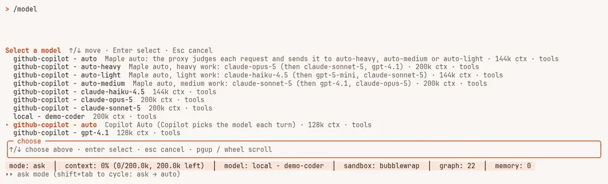
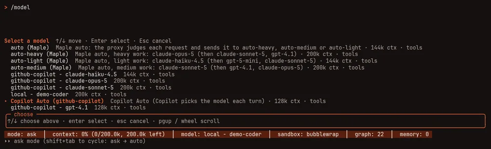

Choose a model #
On this page
Switch models at any time inside the agent:
/model pick from a list
/model gpt-4.1 switch directly
/model auto let the agent choose for each messageWhich models appear depends on what you have configured: the ones your Copilot plan allows, the ones your
Anthropic key can call, and whatever your local servers have loaded. The agent also shows how much of the
model's context is used, in the status bar. /context shows the figures.
Automatic choice #
/model auto chooses a model for each message from your current provider's own ranking of its models, and
tells you what it chose and why. For example, the status bar reads gpt-4.1 (auto: heavy) and the first
message prints a line such as model: auto → gpt-4.1 (heavy; no powerful model on this account; used
versatile).
It works inside one provider at a time and never switches between them. If you are on a Copilot model,
each message picks among Copilot's models. If you are on an Ollama model, it stays in Ollama. Moving between
a cloud model and a local one changes cost, privacy and capability, so that stays your decision: use
/model <name>.
- Providers with a ranking. GitHub Copilot labels each model powerful, versatile or lightweight, and auto uses those labels. An account with no powerful model (Copilot's free plan) sends heavy work to the best model it has.
- Providers without one. Ollama, LM Studio, oMLX and Apple's on-device model publish no ranking, so there
is nothing to choose between and auto keeps your model. To rank a local provider's models yourself, add
category: powerful,versatileorlightweightto each model inconfig.yaml. - Choose it yourself.
harness.auto_model_mappins the model used for heavy, medium and light work:harness: auto_model_map: heavy: gpt-5-mini medium: gpt-4.1 light: claude-haiku-4.5It is one map, and every model in it must belong to the provider you are currently on; an entry for another provider is ignored with a notice.
Auto keeps your own model when it fits, avoids models known to decline long tasks, and remembers models that
decline. By default it does not pick models whose names match *-codex* for you (they are built for a different
tool and often refuse long autonomous work here); harness.auto_avoid in config.yaml changes that list, and
auto_avoid: [] turns it off. A model you choose yourself, or name in auto_model_map, is always allowed.
Auto keeps your own model when it can serve the message: it only moves when the model you are on is the wrong weight for the work, for example a lightweight model asked to plan something large. A model that declines a task it can do is skipped for the rest of the session, and you are told when auto switches away from it.
maple-harness doctor shows what auto would use on your account.
Auto in other tools, through the proxy #
The proxy has the same idea built in, for every tool that talks to it: ask for the model auto and the proxy
chooses a model for each request, or ask for auto-heavy, auto-medium or auto-light to fix the weight. With
nothing configured it uses the first provider in config.yaml that ranks its models, and never mixes providers.
- Set it up on the setup page's Auto mode card: for each weight, a model (Copilot Auto included) and its fallbacks, saved with one click and used from the next request. See Set up auto mode.
- See what it chose: the
X-Maple-RouterandX-Maple-Served-Byresponse headers, therequestedandmodelcolumns of the usage log, and the proxy's log. See See what auto chose.
Inside Maple Harness, typing /model auto is still the agent's own choice described above. The /model list also
shows the proxy's names, auto, auto-heavy, auto-medium and auto-light, each with a description that starts
"Maple auto" (see the picture under Copilot Auto); picking one of them from the list sends every
request to the proxy's auto mode under that name. To have the agent judge each message and the proxy pick the
model, set harness.auto_model_resolution: proxy.
Copilot Auto #
GitHub Copilot has an automatic mode of its own, in which Copilot picks the model for each request. The proxy
lists it as a model of each Copilot account, named after the account, for example github-copilot/auto:
/model github-copilot/autoIn the /model list it reads github-copilot - auto Copilot Auto (Copilot picks the model each turn):


/model list with Copilot Auto selected. The rows above it whose description starts with "Maple auto" are the proxy's own auto names, listed under the provider their defaults come from. A demo setup with a stand-in Copilot service.It is a different thing from /model auto:
/model auto | Copilot Auto | |
|---|---|---|
| Who chooses | Maple Harness, from your provider's own ranking and your settings | Copilot, on GitHub's side |
| Works with | any provider with a ranking, or models you ranked yourself | GitHub Copilot only |
| How to ask for it | /model auto | /model github-copilot/auto, or that name from any tool through the proxy |
- It is listed only when your account offers it. The proxy asks Copilot whether your account can use automatic
selection; if not, it is not in the list. To hide it anyway, set
copilot_auto: offon the provider (see Providers and models). - The plain name
autois not Copilot's.autois the proxy's own auto mode (or your model alias calledauto, which keeps meaning what you set); Copilot's Auto is only ever the name with the account in front. - Choose it as the model, or as the model for a weight. Pick it in
/model(or ask forgithub-copilot/autofrom any tool), or choosegithub-copilot/auto (Copilot Auto: Copilot picks)for a weight on the setup page's Auto mode card, so that a request forautojudged to be that weight lets Copilot pick. See Set up auto mode. - See what Copilot picked. Every answer names the model that wrote it: the proxy's
X-Maple-Served-Byresponse header and themodelcolumn of the usage log show the chosen model, therequestedcolumn showsgithub-copilot/auto, andX-Maple-Routersays which models Copilot offered and whether it chose one for this request or the account's default model was used. With the proxy's log on, each request's line reads, for example,github-copilot/auto→claude-sonnet-5@github-copilot. See See what auto chose. - Its limits are those of the smallest model Copilot may choose for your account, so a long conversation is kept to a size every one of them can take.
- It relies on a part of Copilot that GitHub does not document, the same one GitHub's own editors use. It may change without notice. If Copilot does not say which model to use for a request, the proxy uses the model your account's automatic selection names by default, so the request still gets an answer.
- Fallbacks, budgets and the "out of quota, tried last" rule treat it as one model, whichever model Copilot chose. What a request costs is recorded as Copilot reports it, like any other model; nothing here says it costs more or less than choosing a model yourself.
A default model #
Set the model the agent starts with in config.yaml:
harness:
default_model: gpt-4.1
auto_model: false # true starts every session in automatic modeIf the configured model is not one your proxy serves, the agent starts on the first usable model it does serve and prints a one-line note listing the real names.
Effort and thinking #
/effort list the levels this model accepts
/thinking off spend no reasoning tokens
/plan read-only mode: the answer is a planRelated: every model setting is in Harness settings; to fall back to another model or account when one cannot answer, see Fallbacks; for what a model costs you, see See and reduce what a task costs.